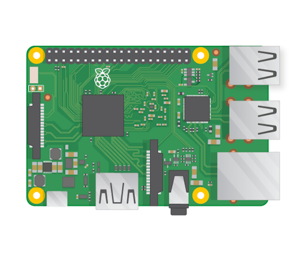
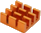
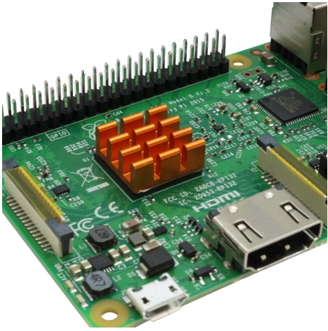
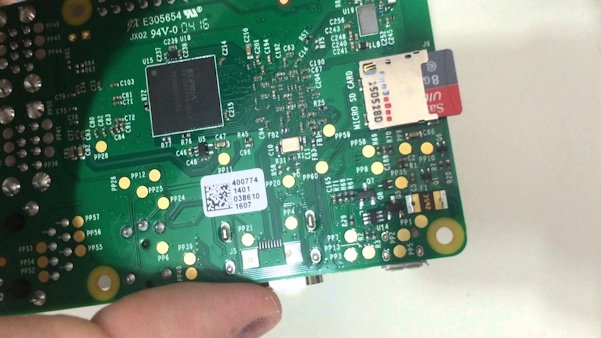
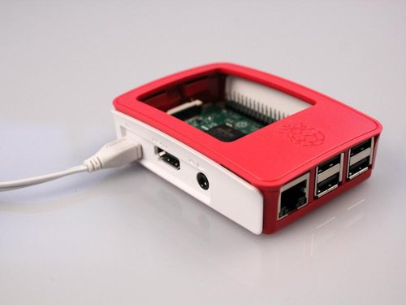
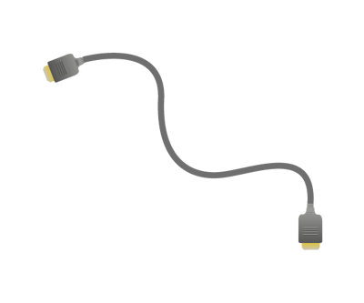
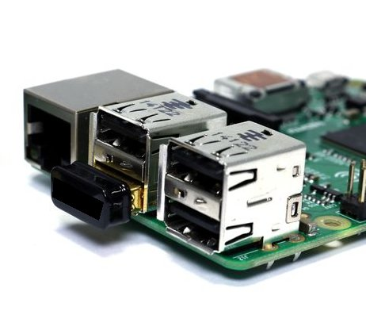
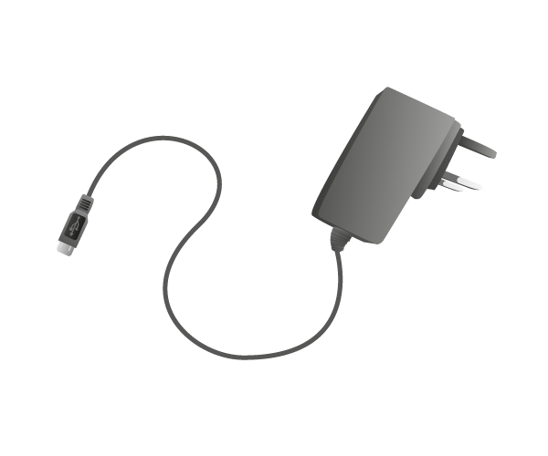

Wie man den Raspberry Pi zusammenbaut und anschliesst.
Der Raspberry Pi
Dies ist der Raspbery Pi. Ein super kleiner mini Computer mit dem man alles machen kann was die grossen Computer koennen. Mit dem Raspberry Pi macht es aber mehr Spass.

Wenn man mit Computern umgeht werden oft Woerter in Englisch benutzt. Darum findest du in dieser Anleitung auch hier und da einen Hinweis darauf was der englische Ausdruck fuer etwas it. Ganz am ende dieses Textes findest du ein kleines Woerterbuch mit haefig benutzten englischen Ausdruecken.
Einen Raspberry Pi zusammenbauen
Um den Raspberry Pi benutzen zu koennen muessen wir zuerst das Gehaeuse zusammenbauen und dann alle Kabel anschliessen
Den Kuehlkopf aufsetzen
Der Prozesser von jedem Computer kann warm werden wenn man ihn benutzt. Darum kann man einen Kuehlkopf  auf den Prozessor kleben. Wenn du keinen Kuehlkopf benutzen willst ist das aber auch kein Problem
Auf der Unterseite des Kuehlkopfes ist etwas Termo-Kleber um den Kuehlkopf auf den Prozessor zu kleben. Forher muss man nur den Schutzfolie abziehen, dann kann man den Kuehlkopf aufkleben.
Fertig sieht das dann so aus wie in diesem Bild:

Die Speicherkarte einstecken
Als erstes stecken wir die Speicherkarte in den Raspberry Pi. Das geht am einfachsten wenn das Gehaeuse noch nicht zusammengebaut ist. Die Speicherkarte wird von der Unterseite wie in diesem Bild gezeigt eingesteckt.

Wenn man will kann man die Karte aber auch rausnehemn und einstecken wenn das Gehaeuse aufgebaut ist.
Die Speicherkarte wird haefig auch Sd-Card genannt. Card ist Englisch fuer Karte.
Das Gehaeuse zusammenbauen.
Der Raspberry Pi muss nicht umbedingt in einem Gehause sitzen, aber damit er besser geschuetzt ist sollte er am besten ordentlich verpackt sein.
Das Gehaese besteht aus mehreren Teilen die man einzeln zusammensetzen kann.

Danach kann man alle anderen Stecker einstecken.
In Englisch wird das Gehaeuse case genannt.
Den Fernseher anschliessen
Der Raspberry Pi muss an den Fernseher angeschlossen werden damit wir ein Bild sehen koennen. Das Kabel dafuer wird HDMI-Kabe genannt.

Das HMDI-Kabel wird and der Seite des Raspberry Pi eingesteckt.
Die Funk-Tastatur anschliessen
Die Tastatur (keyboard) ist eine Funk Tastatur (wireless keyboard). Ausserdem hat die Tastatur ein Trackpad, man braucht also keine zusaetzliche Maus. Um die Tastatur benutzen zu koenne muss der kleine Funkempfaenger in einen der USB-Anscluesse des Raspberry gesteckt werden. Der Raspberry Pi hat view USB-Anscluesse. Der Tastatur-Empfaenger kann in einen der USB-Anschluesse gesteckt werden, es spielt keine Rolle in welchen USB-Stecker man die Tastatur steckt.

In Englisch ist wird die Tastatur Keyboard genannt.
Den Raspberry Pi einschalten
Bis jetzt sollten wir dies gemacht haben: * die Speicherkarte eingesteckt, * das Gehaeuse zusammengebaut * den Fernsehe mit dem HDMI-Kabel angeschlossen * den Tastatur Funkempfaenger in einen der USB-Anschluesse gesteckt. Sehr gut. Jetz muss der Raspberry Pi eingeschlatet werden.
Der Raspberry Pi ist so klein, er hat keinen Ein/Ausschalter. Wenn wir das Stromkabel einstecken wird der Raspberry Pi eingeschaltet.
Nachher wird auch beschrieben wie man den Raspberry Pi wieder ausschaltet. Man darf naemlich nicht einfach nur das Kabel herausziehen. Also zunaechst einmal nur einschalten.
Der Stromanschluss sieht etwa so aus: 
Wenn man den Stromstecker in an der Seite neben dem Fernseh-Anschluss einsteckt startet der Raspberry Pi.
Wenn alles zusammengesteckt ist sieht das in etwa so aus.